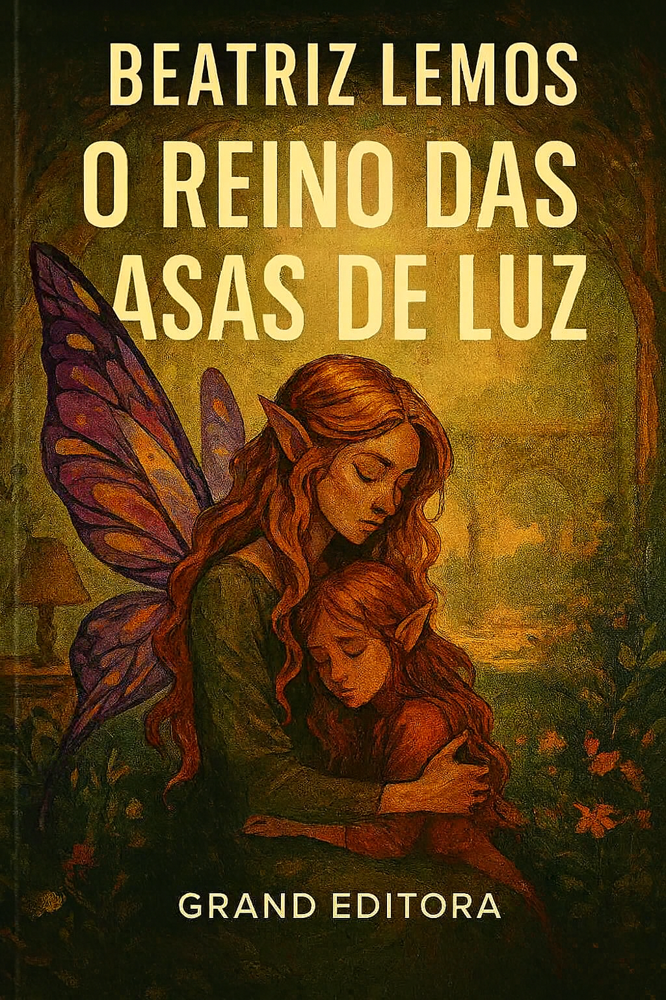

“O Reino das Asas de Luz” é uma jornada encantada publicada pela Grand Editora, onde fadas, magia e coragem se entrelaçam em uma narrativa de fantasia arrebatadora. Prepare-se para descobrir um mundo onde os sonhos têm asas e os mistérios brilham sob o luar.